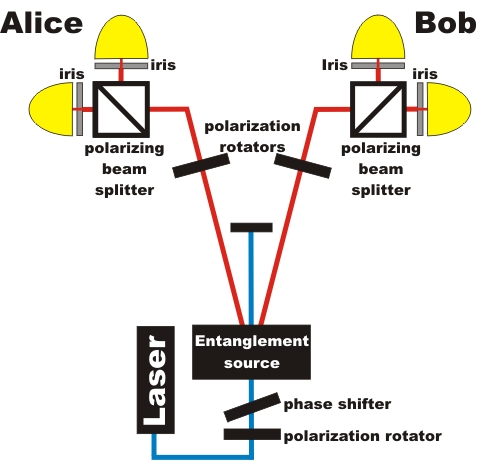
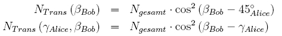

Entanglement chapter A:
How are entangled photons measured?
In this chapter we will explain the principles of detecting entangled photons with continuous data rate. The experimental setup is shown in figure 1. Details on the generation of entangled photons are given in chapter B. The preparation of different Bell states using a λ/2 plate and a λ/4 in front of the PDC crystal is explained in chapter C.

Figure 1: Setup of the experiment
Measurement at 50% transmission probability
Alice’s detector is based on the detector in the quantum random generator. A λ/2 plate is placed in front of her beam splitter in order to rotate the plane of polarization. This device effectively rotates Alice's entire detection system around the optical axis. Obviously, the λ/2 plate is a very convenient way to overcome mechanical problems. Bob’s side is exactly the same as Alice’s. The measurements are coincidences between Alice and Bob. In the following interactive screen experiment you can investigate entangled photons and non-entangled photons at a fixed beam splitter ratio of 50%.
Observation
Non-entangled photon pairs are individually reflected or transmitted at random with 50% probability each. Entangled photons are also randomly reflected and transmitted with 50% probability when only Alice looks at her own detector (same for Bob), but reflection and transmission is highly correlated between Alice and Bob. We observe 95% correlation. The remaining uncorrelated events are due to experimental limitations such as geometrical effects in the PDC crystal and inhomogeneity in optical components.
Detection with equally rotated polarization
In the next experiment the λ/2 plates in front of Alice’s and Bob’s detectors are rotated by equal amounts. This corresponds to a rotation of the polarizing beam splitter and both detectors around their axes. In the following interactive experiment you can change the polarization angle equally on Alice's and Bob's side with two grey buttons. Additionally you can measure entangled and non-entangled photons by changing the crystal. Can you see the difference between entangled and non-entangled photons?
Observation
With non-entangled photons, this measurement yields Malus’ law for single photons with horizontal polarization. With entangled photons, we obtain the same result for any position of the λ/2 plates as in the previous experiment, i.e. the detection of entangled photons is independent of the polarization as long as it is the same for both Alice and Bob.
Detection with differently rotated polarizations between Alice and Bob
In the following interactive experiment the λ/2 plates in front of Alice’s detector has a fixed value for a polarization of 45°. The λ/2 plates in front of Bob’s detector can be changed between 0° and 90°. It is nearly the same setup as the experiment Malus law (T = 100% cos²(α)), which is described in section Basics. What would you expect?
|
Observation
The measured plot for entangled photons looks like the measured plot for single photons. The difference is a translation of the maximum from 0° to 45°. This translation depends on the measured polarization of Alice. The Malus law can be written for entangled photons:.
Original data: 50/50 BS ; same angles ; Malus_law entangled
To chapter B: Generation of entangled photon pairs [klick].
Back to overview [klick].
Autor: P. Bronner, May 2008